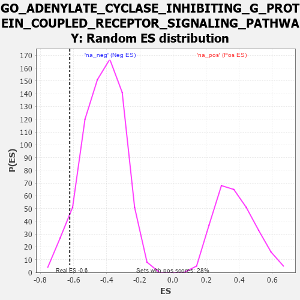

| | | Dataset | 7d |
| Phenotype | NoPhenotypeAvailable |
| Upregulated in class | na_neg |
| GeneSet | GO_ADENYLATE_CYCLASE_INHIBITING_G_PROTEIN_COUPLED_RECEPTOR_SIGNALING_PATHWAY |
| Enrichment Score (ES) | -0.62325305 |
| Normalized Enrichment Score (NES) | -1.472886 |
| Nominal p-value | 0.0625 |
| FDR q-value | 0.21654 |
| FWER p-Value | 1.0 |
Table: GSEA Results Summary
 Fig 1: Enrichment plot: GO_ADENYLATE_CYCLASE_INHIBITING_G_PROTEIN_COUPLED_RECEPTOR_SIGNALING_PATHWAY
Fig 1: Enrichment plot: GO_ADENYLATE_CYCLASE_INHIBITING_G_PROTEIN_COUPLED_RECEPTOR_SIGNALING_PATHWAY
Profile of the Running ES Score & Positions of GeneSet Members on the Rank Ordered List
| PROBE | GENE SYMBOL | GENE_TITLE | RANK IN GENE LIST | RANK METRIC SCORE | RUNNING ES | CORE ENRICHMENT | | 1 | ADCY8 | | | 124 | 1.418 | 0.0842 | No |
| 2 | P2RY1 | | | 1416 | 0.407 | -0.0494 | No |
| 3 | GRM8 | | | 1791 | 0.339 | -0.0726 | No |
| 4 | GRIK3 | | | 2224 | 0.272 | -0.1077 | No |
| 5 | RIC8A | | | 2833 | 0.179 | -0.1716 | No |
| 6 | HTR1B | | | 3745 | 0.035 | -0.2836 | No |
| 7 | DRD2 | | | 5088 | -0.221 | -0.4367 | No |
| 8 | NPY2R | | | 5331 | -0.281 | -0.4473 | No |
| 9 | NPY1R | | | 6732 | -0.776 | -0.5687 | Yes |
| 10 | PDE2A | | | 6985 | -0.927 | -0.5351 | Yes |
| 11 | GRM2 | | | 7596 | -1.547 | -0.5029 | Yes |
| 12 | ADCY1 | | | 7695 | -1.752 | -0.3919 | Yes |
| 13 | ADCY9 | | | 7704 | -1.783 | -0.2674 | Yes |
| 14 | GRM3 | | | 7741 | -1.880 | -0.1397 | Yes |
| 15 | GRM4 | | | 7847 | -2.393 | 0.0156 | Yes |
Table: GSEA details [plain text format]

Fig 2: GO_ADENYLATE_CYCLASE_INHIBITING_G_PROTEIN_COUPLED_RECEPTOR_SIGNALING_PATHWAY: Random ES distribution
Gene set null distribution of ES for GO_ADENYLATE_CYCLASE_INHIBITING_G_PROTEIN_COUPLED_RECEPTOR_SIGNALING_PATHWAY